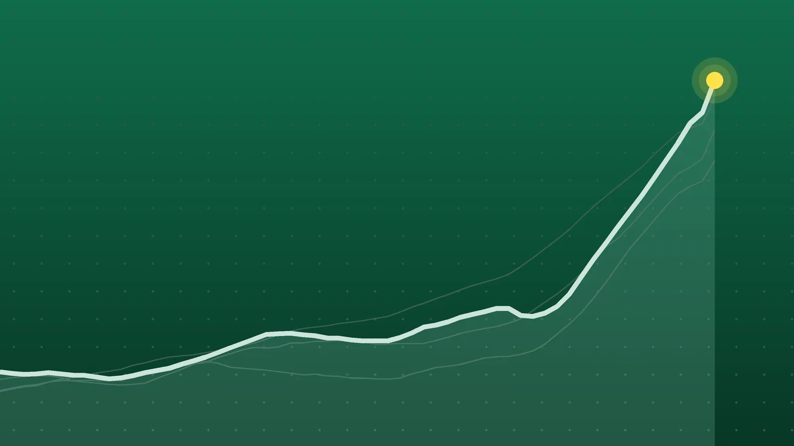

SportsExplainer
El Clásico: Mbappé Double Ends Barcelona’s Perfect Start, 2-1
José Mourinho’s first Clásico since returning to Madrid cut Barcelona’s lead to three points. It was Barcelona’s second defeat in five days after a 4-2 loss at PSG.

Quick take
- Kylian Mbappé scored in the 41st and 87th minutes, and Raphinha equalized for Barcelona in the 61st, as Real Madrid won 2-1 at Spotify Camp Nou on Oct. 25.
- Barcelona had won all nine of their La Liga games before Sunday; they still lead with 27 points, three ahead of Real Madrid on 24.
- It was José Mourinho’s 18th Clásico as Real Madrid coach and his first since he returned to the club in July, TimesLIVE reported.
- The return Clásico at the Santiago Bernabéu is scheduled for Sunday, May 9, 2027, according to LaLiga’s fixture list.
Why it's trending Real Madrid won 2-1 at Camp Nou on Sunday, Oct. 25, handing league leaders Barcelona their first La Liga loss of the season.
What happened
El Clásico went to Real Madrid on Sunday, Oct. 25. Kylian Mbappé scored twice, the second three minutes from the end of regulation, and Madrid won 2-1 at Spotify Camp Nou, according to the live reports from VAVEL and Belgian broadcaster Sporza.
The result ended Barcelona’s perfect run in La Liga. Hansi Flick’s side had won all nine league games before kickoff, 101 Great Goals and other outlets noted. Barcelona are still top, but the gap to Madrid is now three points instead of six.
How the Clásico was decided
| Minute | Score | What happened |
|---|---|---|
| 41 | 0-1 | Gerard Martín tries to clear a low ball from Yan Diomandé, and it rebounds off Mbappé into the net |
| 61 | 1-1 | Raphinha finishes low after a pass from Pedri |
| 87 | 1-2 | Jude Bellingham turns and finds Eduardo Camavinga, whose ball sets up Mbappé |
Minute marks follow Sporza and El Español; VAVEL’s running text logged the winner a minute later.
Barcelona had more of the ball. At halftime they held about 59% possession and had out-shot Madrid 9-6, VAVEL’s figures showed. But El Espectador described a home side that kept possession without finding a way through a deep Madrid defense. Andriy Lunin, starting because Thibaut Courtois had the flu, made a key save on a Gerard Martín header midway through the second half.
Both teams lost a defender to injury. Barcelona right back Xavi Espart went off around the half-hour mark, and Madrid’s Federico Valverde was replaced by Denzel Dumfries early in the second half. Neither club had announced the extent of either injury in the reports reviewed. No player was sent off.
Why everyone is talking about it
Mourinho’s return. Real Madrid rehired José Mourinho in June on a contract through June 30, 2029, Sky Sports reported, 13 years after his first spell ended. TimesLIVE said this was his 18th Clásico as Madrid coach and that his record going in was five wins, six draws and six losses, with only two wins at Camp Nou. Sunday’s result evens that ledger at 6-6-6 and gives him a third win in Barcelona.
A rough week for Barcelona. Five days earlier, Barcelona lost 4-2 at Paris Saint-Germain in the Champions League. Sunday made it two defeats in a row for a team that had been scoring about 4.3 goals per league game.
Missing stars. Madrid played without Vinícius Júnior, who was serving the second game of a four-match suspension, USA TODAY reported. Barcelona were without Jules Koundé and Dani Olmo, World Soccer Talk said.
The title race in numbers
The top three after 10 games, from Goal.com’s table:
| Club | Record (W-D-L) | Goal difference | Points |
|---|---|---|---|
| Barcelona | 9-0-1 | +29 | 27 |
| Atlético Madrid | 8-1-1 | +12 | 25 |
| Real Madrid | 8-0-2 | +15 | 24 |
A Barcelona win would have put them nine points clear of Madrid. Instead, three teams sit within three points, with 28 rounds still to play in a 38-game season.
The rivalry itself also tightened its long-term ledger. Before Sunday, Madrid had won 80 La Liga Clásicos to Barcelona’s 77, with 35 draws, World Soccer Talk reported. That now becomes 81-77-35 over 193 league meetings. Last season Barcelona took two of the three meetings, including a 2-0 league win on May 10 that clinched the title, according to Sports Illustrated.
What happens next
The schedules, per LaLiga’s club fixture pages for Barcelona and Real Madrid:
- Barcelona: host Alavés on Saturday, Oct. 31; host Aston Villa in the Champions League on Tuesday, Nov. 3; visit Atlético Madrid on Sunday, Nov. 8.
- Real Madrid: visit Racing Santander on Sunday, Nov. 1; visit AEK Athens in the Champions League on Wednesday, Nov. 4; visit Valencia on Saturday, Nov. 7.
That Nov. 8 trip to Atlético is the next big test at the top. The return Clásico at the Santiago Bernabéu is set for Sunday, May 9, 2027, with a kickoff time still to be confirmed. All other La Liga results from the day are in our La Liga scores for Oct. 25.
Quick answers
What was the score of El Clásico?
Real Madrid beat Barcelona 2-1 at Camp Nou on Oct. 25, 2026. Mbappé scored both Madrid goals, and Raphinha scored for Barcelona.
Is Barcelona still top of La Liga?
Yes. Barcelona lead with 27 points from 10 games, two ahead of Atlético Madrid and three ahead of Real Madrid.
When is the next Clásico?
The return league match at the Bernabéu is scheduled for Sunday, May 9, 2027, according to LaLiga’s fixture list.
Sources
- VAVEL USA Barcelona vs Real Madrid LIVE Updates, Mbappé scores again (1-2)Oct. 25, 2026
- Sporza Mbappé kroont Real tot winnaar van Clasico: Franse superster bezorgt Barcelona late dreunOct. 25, 2026
- El Español FC Barcelona 1-2 Real Madrid, fútbol hoy | Los de Mourinho se llevan El Clásico con un doblete de MbappéOct. 25, 2026
- El Espectador EN VIVO: Real Madrid vence 2-1 a Barcelona en El Clásico, siga el minuto a minutoOct. 25, 2026
- 101 Great Goals Barcelona 1-2 Madrid: Report, result, goals as Mbappe double settles el clasicoOct. 25, 2026
- USA TODAY Sports via Yahoo Sports FC Barcelona vs. Real Madrid: El Clasico LIVE updatesOct. 25, 2026
- TimesLIVE Mourinho brings new edge to ClasicoOct. 24, 2026
- Sky Sports Jose Mourinho to Real Madrid: Former Chelsea and Man Utd boss' Bernabeu return confirmed by Spanish giantsJune 11, 2026
- Sports Illustrated Barcelona vs. Real Madrid: Last 10 Clasico ResultsOct. 25, 2026
- World Soccer Talk Barcelona vs Real Madrid LIVE updates: Start time, how to watch, and lineups of 2026-27 LaLiga Matchday 10Oct. 25, 2026
- Goal.com LaLiga Table 2026/2027Oct. 25, 2026
- LaLiga Calendar and Upcoming Matches of the Real MadridOct. 25, 2026
- LaLiga Calendar and Upcoming Matches of the FC BarcelonaOct. 25, 2026
Keep reading
La Liga Scores, Oct. 25: Real Madrid Win Clásico 2-1 at Camp Nou
La Liga scores for Oct. 25, 2026: Real Madrid beat Barcelona 2-1, Athletic Club routed Getafe 4-0, Real Sociedad edged Levante 2-1 and Celta drew Betis 0-0.

Champions League Scores, Oct. 21: Rice Rescues Arsenal at Bayern
Champions League scores for Oct. 21, 2026: all nine Matchday 3 results, from Bayern 2-2 Arsenal and Real Madrid 4-1 Leipzig to Como’s 4-1 rout of Man United.
Premier League Scores, Oct. 25: Bournemouth Rout Man United 3-0
Premier League scores for Oct. 25, 2026: Bournemouth won 3-0 at Man United, Liverpool beat Brighton 2-0, Newcastle won at Palace, plus two draws.